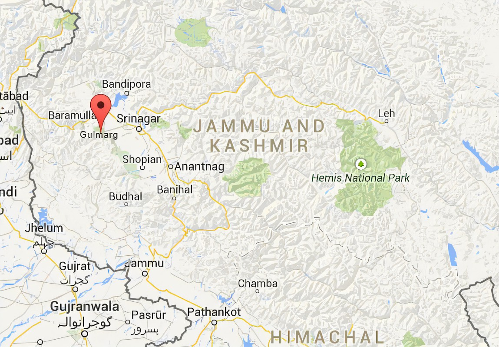

Explore the beautiful destinations of Jammu and Kashmir
Discover the beauty of Gulmarg, a stunning hill station and popular skiing destination in the western Himalayas.
Read More About Gulmarg
© 2024 Travel Blog. All rights reserved.